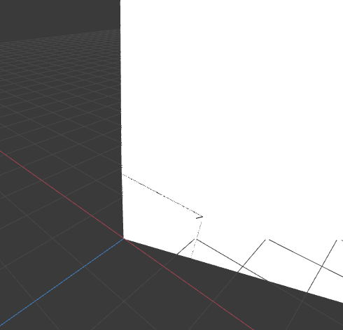
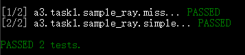
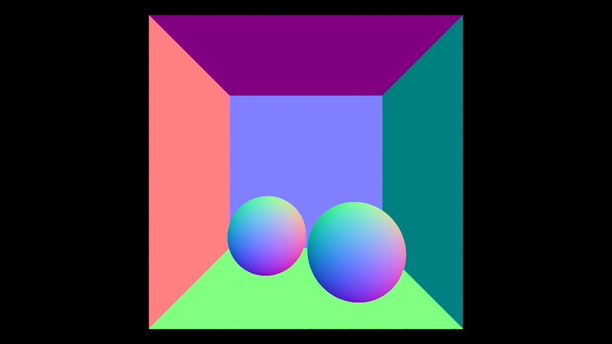
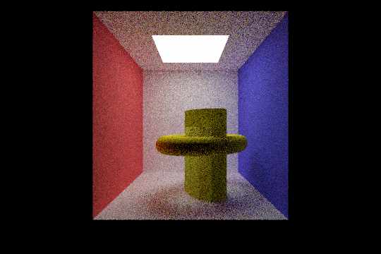
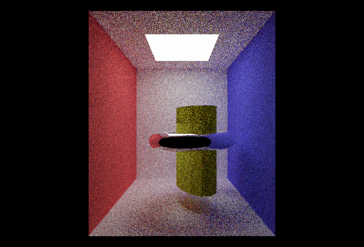

**Assignment 3 Report**
AndrewID: chuangm
(##) About this template
* You can view your writeup by opening it in a browser - right click this file and open with your browser of choice.
* Replace reference images with your own screenshots or renders when applicable.
* Include descriptions of any encountered problems and the time you spent on each task.
(##) A3T1 CHECKPOINT
You do not need any screenshots for this task.
Your completion will be graded based on the reference `test.a3.task1.cpp` file and
checking that camera rays properly fill up the camera view frustrum.


(##) A3T2 CHECKPOINT
You do not need any screenshots for this task.
Your completion will be graded based on the reference `test.a3.task2.*.cpp` files and
checking that rendering spheres and triangles works properly.

(##) A3T3 CHECKPOINT
You do not need any screenshots for this task.
Your completion will be graded based on the reference `test.a3.task3.*.cpp` files and
checking that the generated BVH looks reasonable and rendering large meshes is fast and correct.
(##) A3T4 Final
You do not need any screenshots for this task.
Your completion will be graded based on the reference `test.a3.task4.*.cpp` files and
checking that rendering lambertian materials look correct.
(##) A3T5 Final
You do not need any screenshots for this task.
Your completion will be graded based on the reference `test.a3.task5.*.cpp` files and
checking that rendering mirror, refract and glass materials look correct.
(##) A3T6 Final
You do not need any screenshots for this task.
Your completion will be graded based on the reference `test.a3.task6.*.cpp` files and
checking that there is a speedup and improvement between with and without the task 4 direct lighting.
(##) A3T7 FINAL
You do not need any screenshots for this task.
Your completion will be graded based on the reference `test.a1.task7.*.cpp` file and
checking that rasterizing scenes with environment lighting yields correct sampling.
(##) RENDERED IMAGE FINAL
Your image:

Explanation of what it is and how you made it:
I put the model I built in HW into the box, replacing with the two ball. To see how
this looks like. Also, I have changed the material of the circle around it into mirror and
glass. The results are like this:

Any free model sources you need to credit? No
(##) EXTRA CREDIT FINAL
Use this section to explain any extra credit implementations you have made.
I implement T1:Jittered and MultiJittered sample, you can find it in samplers.cpp/h
(##) Feedback
Use this section to provide feedback about the assignment.
Task1:
8 hours. The step one is the most difficult. There are lots of things to notice to
make sure that rays properly fill up the camera view.
Taks2:
10 hours: There are lots of extra check to do to make sure all the results are correct.
Taks3:
20 hours: To build to BVH and search it, it took me a lot of time to realize the same methods. Besides,
by testing with some graphics including cow, I found many other problems, so need to work more on it to
make sure the rendering is all correct.
For the Task4 to Task 7(All 3.5 part), using my BVH may cause some problems, so Please use reference BVH or not use it to get correct
result.
Task4:
6 hours, The most confusing part is to distinguish between local and world position, and correctly use helper
functions.
Taks5:
8 hours: This aprt is confusing for how to distinguish between if the light is going in or out of the material, and
use the original direction to get the final direction. But finally solve this by visiting OH.
Task6:
6 hours: The confusing part for this is also in distinguishing between world and local space, espacilly need to know
that the hit.pos is in world position. Also, how to correctly use hit.bsdf.evaluate also matters. I learned these from OH.
Task7:
10 hours: The confusing part for this is how to do correctly use _cdf and _pdf vectors. Alos, for the write-up isn't correct
at first, I implement this in wrong way. But this is fixed after correct one uploaded. Also, the part of using jacobian and knowing
that image is from 0 to h and transforming is from PI to 0 are important. I made mistakes first in these two parts.